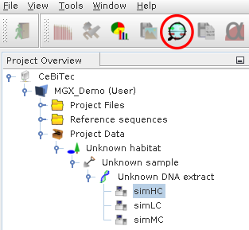
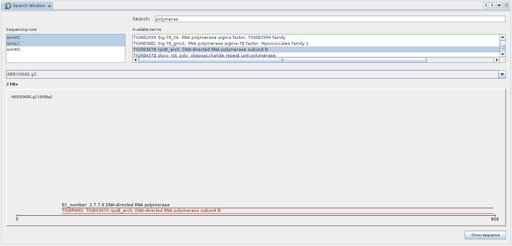

Figure 2.34:
Icon for the metagenome search component.
|
 |
Figure 2.35:
Search component showing results for the term “polymeras”. The search was performed
within the select metagenomes simHC and simLC (top left); the bottom part shows an individual sequence identified
by the search. Search results are displayed together with all other attributes available for a sequences, thus allowing
to identify co-occurence of results.
|
 |
Sebastian Jaenicke, 2019-05-03